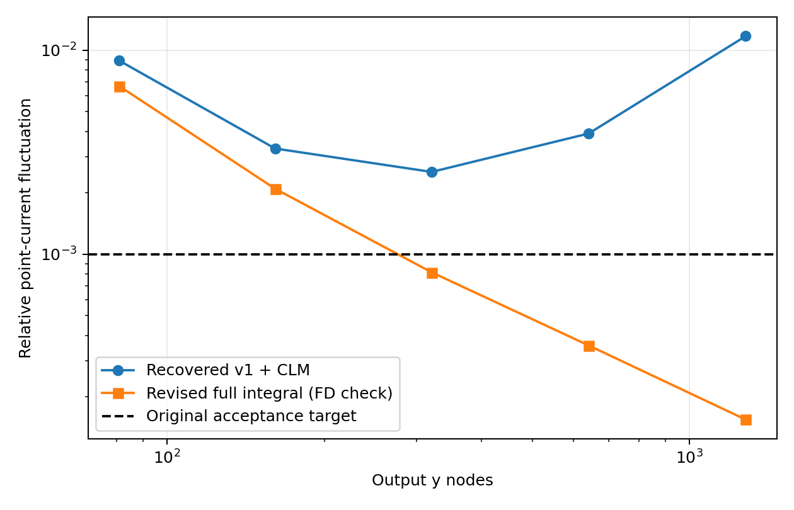
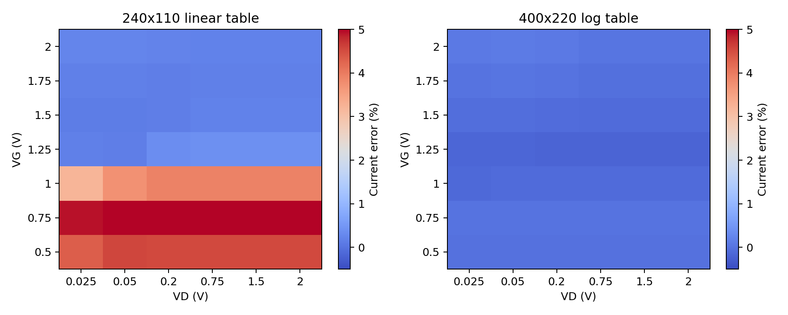
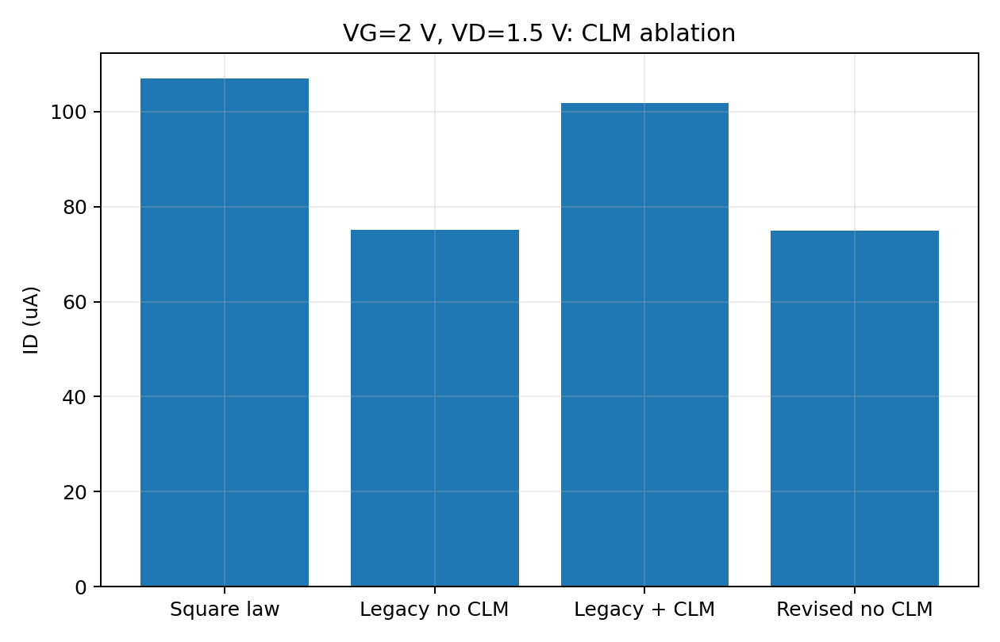
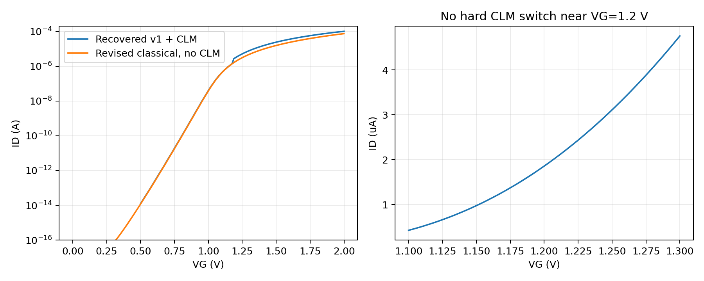
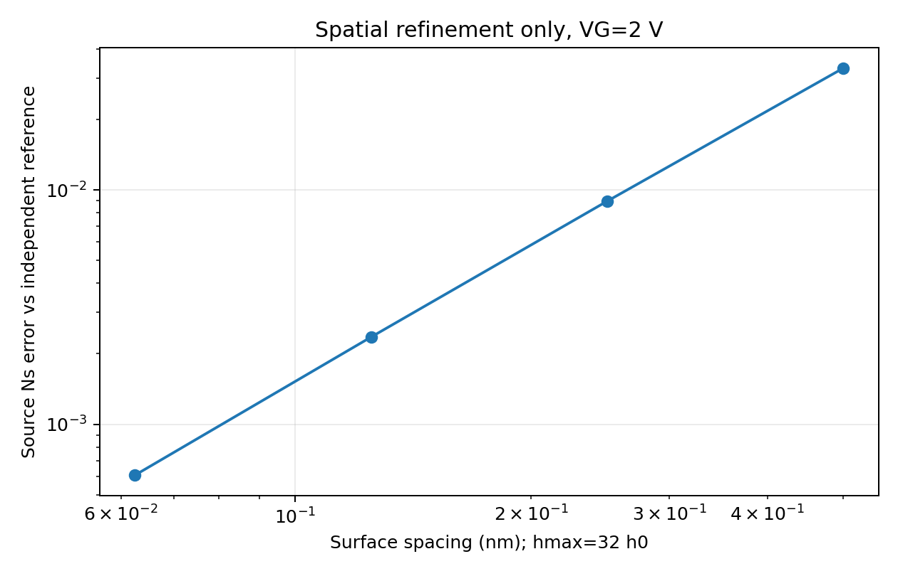
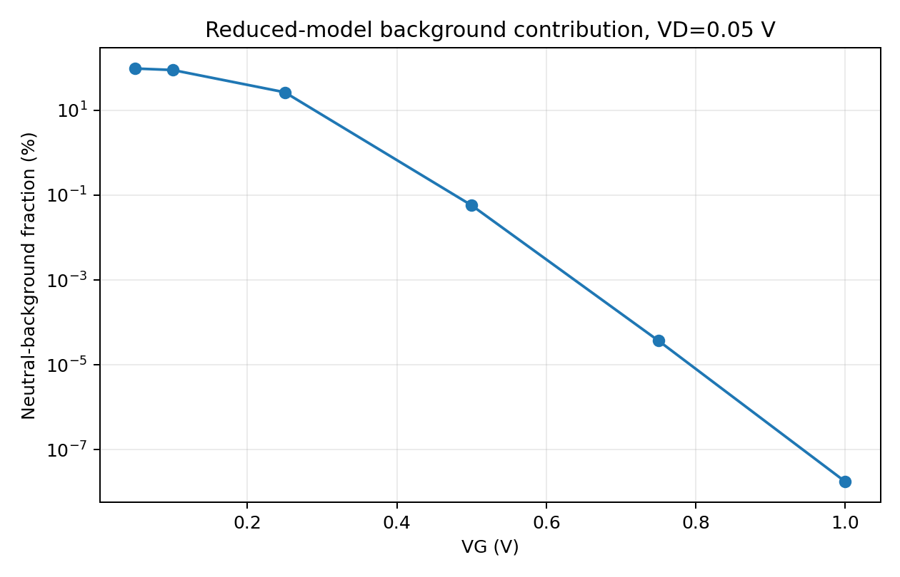
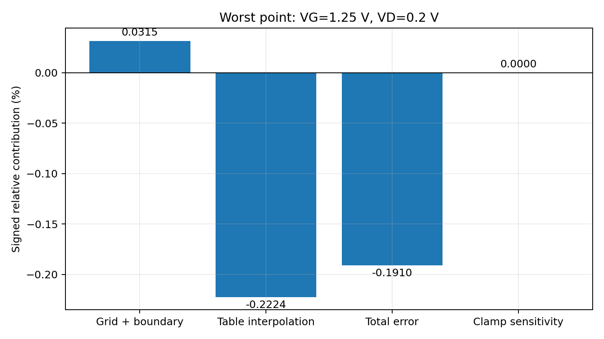

# MOSFET 第一阶段修订与证据核验报告 版本 phase1-1.2。日期 2026年10月26日。此报告仅在完整测试结束且JUnit与日志一致后生成。 ## 1 交付状态 本次完整测试：**91 passed, 4 skipped, 0 failures, 0 errors**，共95项。完整逐项日志见根目录tests_phase1.txt，结构化结果见verification/pytest.xml和pytest_status.json。 4项跳过均为上传材料中缺失原始golden的S1/S2回归及键集合检查。S3的生产golden、配置检查及篡改检测实际运行并通过。没有重新伪造原版S1/S2的历史结果。 独立参考42点最大电流偏差0.190988%。这个数字仅指当前经典约化模型的数值实现一致性，不是实际MOSFET的实验误差。 ## 2 对前次交付与锐评的核查 - 接受：前包tests_phase1.txt仅6字节，未等全测试结束便交付，是交付流程失败。新流程以进程退出码、完整JUnit、匹配日志摘要三者共同判定完成；缺任何一项禁止发布。 - 接受：前次freeze使用240×110而生产使用400×220，回归配置不统一。现在生产、冻结、正式S3测试均导入同一个PRODUCTION配置，canonical文件为semiconductor_sim/results/golden/stage3.json。 - 接受：前包混入旧失败运行study_log.txt。现在写文件与打印共用严格JSON编码器，支持NumPy标量/数组，拒绝NaN/Infinity。当前规范日志由成功运行重新生成；旧证据仅在history下原交付快照保留。 - 澄清：实际检查的旧ZIP中，结果JSON、4 CSV、NPZ及5对PNG/SVG均存在；旧版test_frozen_phase1_golden也确实读取golden_phase1.json。问题是配置不一致、全套检查未完成，不能将其描述为完全无人读取。原ZIP摘要与文件清单见history/v11_archive_audit.json。 ## 3 单一生产配置与golden证据链 配置源：stage3_mosfet/config.py::PRODUCTION。当前400×220、log插值、h0=0.125 nm、hmax=4 nm、xmax=1.2 μm。物理参数、偏压样本和阈值判据也记录在golden.config中。 冻结入口：python scripts/freeze_phase1.py --reason 说明。已有文件必须额外显式给出--allow-replace。正常复现不会调用冻结脚本，并核对golden运行前后的SHA256不变。test_golden.py直接比较同配置的生产结果；测试故意篡改配置及电流，确认都会被拒绝。 golden仍只证明相对冻结版本的数值回归，不证明物理正确。最初缺失的历史golden与新修订版本golden不是同一证据。 ## 4 中性背景贡献必须由比例确定 参考明确计算 Ns = Ns_excess + nb*xmax，同时单独积分得到ID_excess与ID_background。该分解是约化域内的载流子记账；“过剩”并不意味着它已经由真实源漏注入模型验证。 VD=0.05 V： | VG V | 总电流 A | 中性背景电流 A | 背景占比 | |---|---|---|---| | 0.05 | 5.9638762e-18 | 5.7399881e-18 | 96.24593% | | 0.1 | 6.4593136e-18 | 5.7399881e-18 | 88.863748% | | 0.25 | 2.1612685e-17 | 5.7399881e-18 | 26.558422% | | 0.5 | 9.9682659e-15 | 5.7399881e-18 | 0.057582615% | | 0.75 | 1.5400691e-11 | 5.7399881e-18 | 3.7270978e-05% | | 1.0 | 3.2208378e-08 | 5.7399881e-18 | 1.7821413e-08% | 因此，VG=0.5和0.75 V下“主体由中性背景贡献”的具体判断不成立；接近平带的VG=0.05 V处背景确实占主导，显示了低栅压电流对计算域深度的敏感性。报告不把这一区域的绝对电流水平解释为真实器件关断电流。 即使0.5—0.75 V的背景很小，独立参考与数值解仍共享经典统计、恒定迁移率和理想载流子库等近似。一致性属于code verification，不能升级为experimental validation。 ## 5 最大0.191%偏差的定量归因 最大点VG=1.25 V，VD=0.2 V。 - 独立第一积分参考：3.06755559825e-06 A。 - 同一空间网格直接Poisson栅边界求解，不查表：3.0685204572e-06 A。 - 生产查表：3.06169692441e-06 A。 | 分量 | 相对参考的有符号贡献 | |---|---| | 同网格直接求解－连续参考（含有限域/求解器影响） | +0.03145367% | | 生产查表－同网格直接求解 | -0.22244203% | | 两者相加的总偏差 | -0.19098835% | | 开启历史±3 V钳位的配对敏感性 | +0.00000000% | 总偏差由两个差值按同一参考归一后相加，闭合残差0。这是一条条件数值分解，取决于所选求解/插值路径，不能当作唯一的器件物理分解。 另外，在连续参考的phi_n节点上单独作log插值，得到phi_n方向插值敏感性-0.056634%。这属于另一项消融，不应再次加到上表而重复计数。直接积分器估计误差约3.32e-12（相对量）；这是积分器估计，不是完整误差界。 同一最大点直接求解的空间细化： | h0 nm | hmax nm | 相对参考电流偏差 | |---|---|---| | 0.25 | 8.0 | +0.123550% | | 0.125 | 4.0 | +0.031454% | | 0.0625 | 2.0 | +0.007938% | ## 6 钳位归因 生产版密度计算已取消电势钳位；超出浮点指数范围将显式报错。历史±3 V开关只为配对敏感性试验保留。 最大偏差点开/关历史钳位电流差为0，钳位激活数量为0。整个生产表求解记录的试探势范围为[-0.3,1.6] V；82252个有效截面均在历史±3 V以内。因此当前0.191%偏差不能归因于该钳位。这个结论限于已检查域，不能推广至任意偏压。 ## 7 电荷比较恒等式的地位 charge_budget只比较指定平方律电荷Cox(VG−VT,long)/q和计算面密度。Qb又由Qs和Ns定义，所以其闭合误差接近机器精度是代数内部一致性，不是独立物理验证。本版从数值精度验收项目中移除该闭合条件，字段明确标注algebraic_reference_comparison。 在VG=2 V源端，独立参考的表面势项155.59167 mV、体电荷项16.04873 mV仍可帮助解释与指定平方律电荷的差异；不将其解释成量子效应或实验精度证据。 ## 8 阈值分支、CLM与守恒 原表T10使用线性平方律反解得到33.6 mV，但该点不满足VD<Vov。正确饱和分支判据偏移为29.29250 mV；保留原版提取值时剩余16.5648 mV。本版重新提取阈值1.043274008 V，对应总差46.92401 mV，分解为29.29250+17.63151 mV。 VG=2 V、VD=1.5 V时，旧模型关闭CLM为75.04028 μA，开启后为101.83780 μA，平方律为106.91292 μA。较小的平方律偏差包含经验CLM补偿，不能作为独立准确性证明。修订完整积分无CLM为74.90755 μA。 | y点数 | 旧版差分波动 | 本版独立差分波动 | 本版边积分内部一致性 | |---|---|---|---| | 81 | 0.0088966916 | 0.0066737468 | 4.993e-14 | | 161 | 0.0033002712 | 0.0020951761 | 6.803e-14 | | 321 | 0.0025340649 | 0.00081545055 | 1.755e-13 | | 641 | 0.0039086903 | 0.00035732575 | 2.059e-13 | | 1281 | 0.01173387 | 0.00015470324 | 3.631e-13 | 边积分一致性来自共同插值表示，明确属于构造检查。独立差分检查保留Ns>0.2 Ns,max和两端各5%排除掩码，未声称漏端极薄层的任意点导数均已解析。准费米势电流形式已包含漂移与扩散。 ## 9 交付物与完成门槛 提供结果JSON、基线重算JSON、6个CSV、transfer_curves.npz、7对PNG/SVG、完整测试日志、JUnit、状态JSON、文件大小/SHA256清单、源码及可编辑S3章节。 离线阅读：reports/Phase1_Report.html。无需Python即可看结果。重新计算：python scripts/reproduce_phase1.py --fresh。环境实测版本见environment_verified.txt，依赖说明见README。首次冷启动建表可能需要数分钟。 verification/run_status.json只有在数值实验、全测试、报告和产物校验全部完成时写入completed/exit_code=0。打包校验拒绝空文件、不完整测试摘要、缺失图片或运行中的状态。归档后从新目录冷启动复现，记录在verification/clean_unpack_verification.json。 ## 10 研究范围 本轮完成工程交付和已识别数值证据的补强，没有声称SCI投稿终稿。器件参数仍为NA=1e16 cm^-3、tox=20 nm、W=L=1 μm、300 K。未加入二维DD源漏结、DIBL、量子、场依赖迁移率或AC。下一研究阶段需要文献新颖性检验、参数泛化与二维DD对标。






